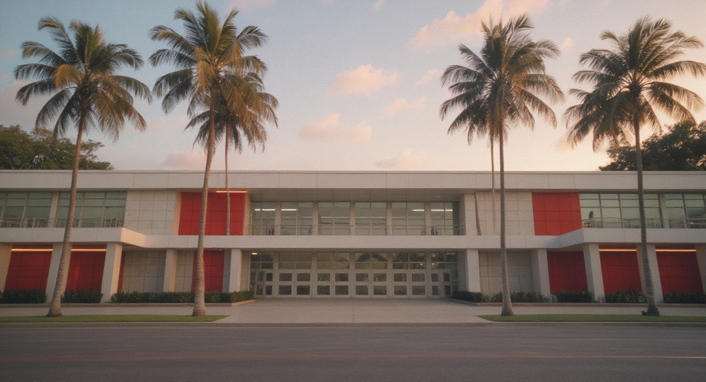

Image Benchmark Review
Practical hero comparison: OpenAI native landscape output is 3:2
(1536x1024); Imagen 4 native landscape output is 16:9.
Fritz judges visual quality, composition, and overlay-safe negative space.
B-001 vs B-002 Hero Still
B-001 - OpenAI Responses hero still, 3:2
B-002 - Imagen 4 hero still, 16:9
B-004 fal.ai FLUX Kontext Style Variations
B-004.1 - warm yearbook print

B-004.2 - flashback VHS yearbook
B-004.3 - archival school memory